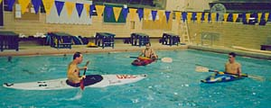

Return to UKC Home
Return to UKC Home
Overview
Membership and How to Join
Instruction: including Club Pool Sessions and Rescue Techniques
Equipment: how to sign it out, and maintenance
Club Rules and Guidelines
|
Overview |
Instruction:
Informal instruction and practice sessions are held at pool sessions most Sunday mornings during the 9-month academic year when classes are in session. Separate evening practice sessions on Lake Washington for whitewater paddling and sea kayaking are sometimes conducted when daylight permits. Please read the Club Announcements or contact a club officer for instruction times. Clinics in whitewater racing, rescue techniques, and sea kayak trip planning are scheduled according to interest. Experienced club members generally lead trips of varying difficulty, each weekend when the rivers are runnable, with sea kayak outings organized during the warmer seasons. We are currently developing some video clips to illustrate basic paddling skills (see beta version of video page).
Club Pool Sessions:
Pool sessions are an excellent opportunty for all kayakers to develop skills in the comfort of a heated swimming pool. Pool sessions are typically run by a few advanced paddlers who teach skills, such as rolling, to less experienced paddlers. These sessions are a great opportunity to improve your kayaking ability and meet other club members.
To attend a pool session meet at the WAC at 8:30AM Sunday mornings to load boats and other equipment. The pool sessions are held at the Hec Edmundson Pool and last from 9:00AM to 11:00AM. Parking is at the WAC or the Montlake Lot north of the IMA. Priority for boats is given to people who help with the transportion and cleaning of boats prior to the pool session. During busy periods you may not get into a boat if you are not there at 8:30 to help out.
It is a good idea to bring a shirt that you do not mind getting wet, which will help keep you warmer in the water, and also goggles, which keep the chlorine water out of your eyes and improve visibility while you are learning to roll.
Note: no pool sessions are held during final exam weeks, breaks, or during the summer.
Click here for information on How to Lead a Pool Session.
UKC members also schedule occasional practice sessions for river and sea rescue techniques. These will be announced when available. If you are interested in learning rescue skills, talk to a club officer.